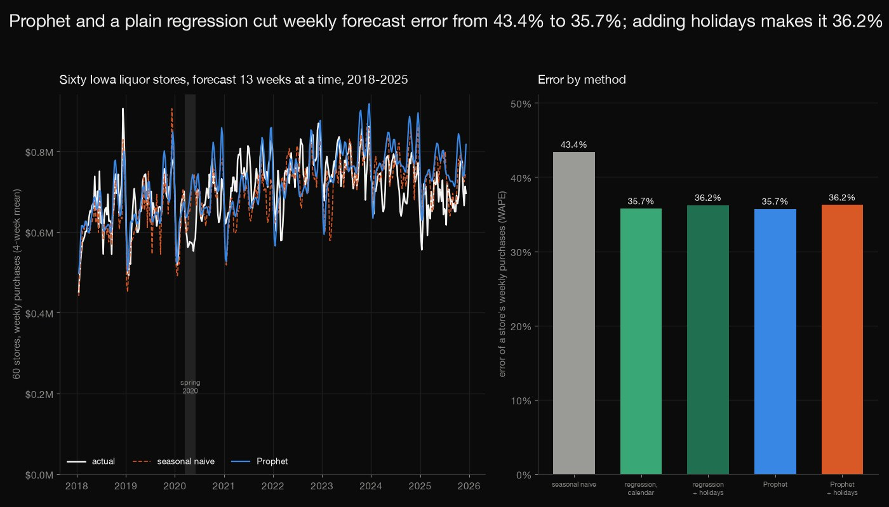
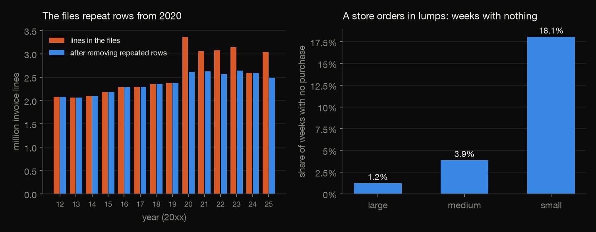
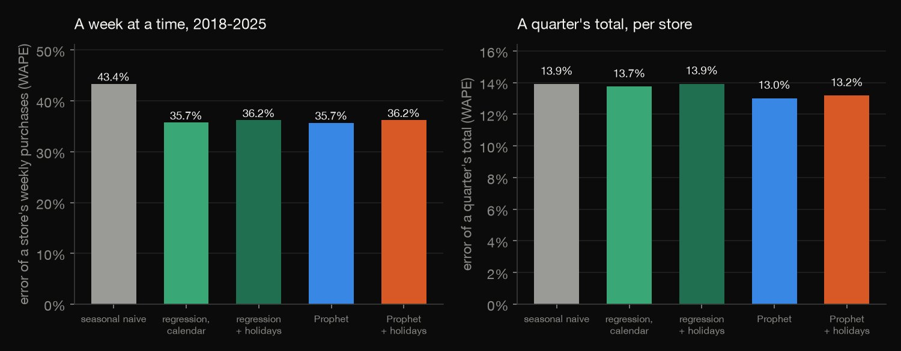
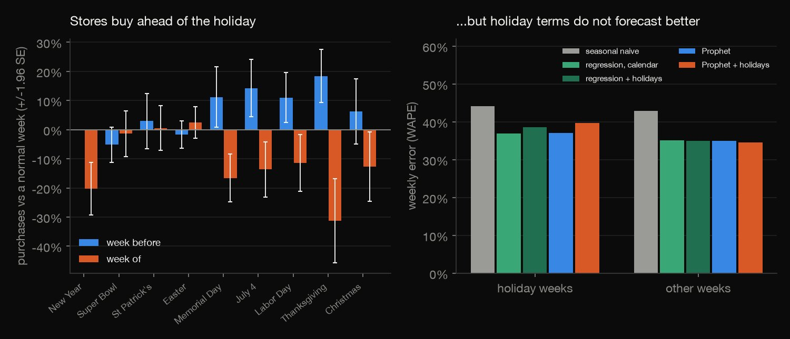
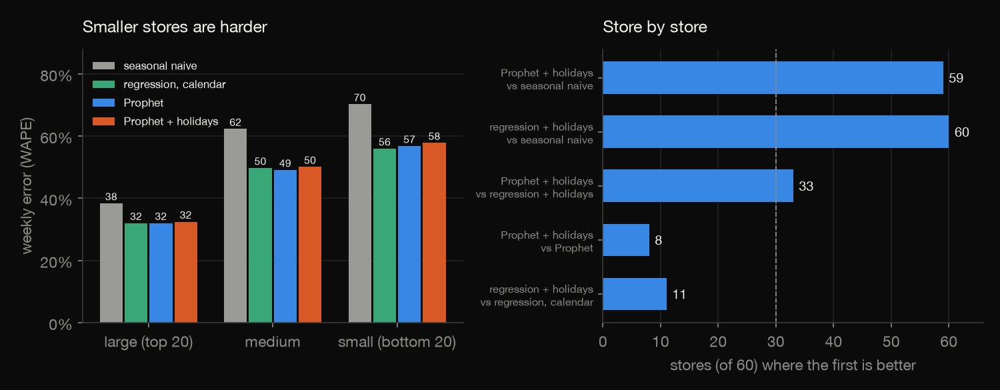
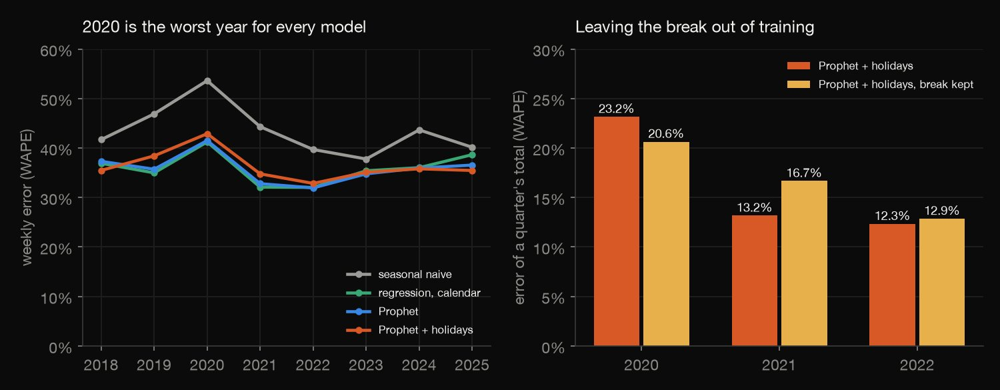

Python · Forecasting · 2026-10
Can Prophet Forecast What Iowa Liquor Stores Will Order?
Sixty Iowa liquor stores forecast 13 weeks at a time, 2018 to 2025: Prophet and a plain regression cut the weekly error from 43.4% to 35.7% but a quarter's total only from 13.9% to 13.0%. Stores clearly buy ahead of holidays, yet holiday terms raised the error to 36.2%.

Stores' purchases from the state (Class E, off-premises licensees), not shoppers' sales, in nominal dollars. The 60 stores are survivors picked from the 477 that bought every month of 2014 to 2025, and nothing was tuned. The files repeat whole rows from 2020, removed here. Promotions could not be studied: the data has no promotion field. Source: Iowa Liquor Sales, State of Iowa, Alcohol Operations Bureau, via the Iowa Data Hub (data.iowa.gov), licence CC BY 4.0 as stated in the dataset metadata.
01 — The problem
A liquor store has to order weeks ahead, and Prophet is the usual tool for forecasting sales with holidays. Can it forecast what Iowa liquor stores will order, better than simply repeating last year's week, and do holidays help?
The task follows DataCamp's "Store Sales Forecasting with Prophet" (50+ stores, holidays and promotions). The data is the State of Iowa's open record of every spirits purchase by its off-premises liquor licensees since 2012 (33.3 million invoice lines), forecast only from the weeks before each origin.
02 — What I built
Sixty stores, six forecasts, one honest test:
- The audit: 2,742,772 repeated lines removed, returns kept, the moved download found.
- The walk-forward test: 32 origins, 13 weeks each, seasonal naive, a regression, Prophet, each with and without holidays.
- Holidays: nine of them, the week before and the week of, effect sizes and forecast value.
- Store size and 2020: error by size class, and the spring 2020 break left in or out of training.
- Check:
check.pyrecounts 728,815 numbers in plain Python, refitting the benchmarks by hand, and a rerun of 16 Prophet fits reproduces the stored forecasts to 2e-09.
03 — How it was built
- 01
Find the moved download
The old Socrata link no longer works; the data now lives on the Iowa Data Hub as one dataset per year.
download.pyfetches the 14 yearly zips (9.4 GB, never committed, checksums kept); for 2021 and 2024 the csv endpoint answers with an empty body, so their json endpoint is used.URL = "https://idh-be.iowa.gov/api/v1/datasets/{id}/rows.{ext}" - 02
Remove the repeats, then aggregate
From 2020 the files repeat many rows exactly, and from 2025 an invoice id covers several lines, so duplicates are removed on whole rows, never on the id. Then DuckDB reduces 33 million lines to sums per store and week, store and month, item and month.
con.execute("CREATE OR REPLACE TABLE raw AS SELECT DISTINCT * FROM raw") # the export repeats whole rows in some years (see year_audit.csv) - 03
Walk forward, from the past only
Every 13 weeks from 1 January 2018 each model is refitted on the weeks before and forecasts the next 13, for 60 stores picked across the size range. Prophet runs on its defaults with multiplicative yearly seasonality, with or without nine holidays; the 2020 break is left out of training for later origins.
m = Prophet(growth="linear", yearly_seasonality=True, weekly_seasonality=False, daily_seasonality=False, seasonality_mode="multiplicative", holidays=hol) - 04
Score by WAPE
Errors are summed over stores and weeks (WAPE), also per store, by size, year, holiday week and period, and for the 13-week total; a sign test counts the stores where one model beats another.
return float(np.abs(f - a).sum() / a.sum()) - 05
Recount it without the libraries
check.pyrereads 2012 and 2025 from the raw files, refits the seasonal naive and both regressions for every store and origin by Gauss-Jordan elimination, and recomputes every score from the stored forecasts: 728,815 numbers. Only the Prophet forecasts themselves are taken as stored, and a rerun of 16 of them gives the same values to 2e-09.c_cal, c_hol = fit(acc, list(range(NF))), fit(acc, list(range(NC)))
04 — Results
The files repeat themselves. Of 36,000,732 raw lines, 2,742,772 repeat another line exactly, all in the files of 2020 to 2023 and 2025: 2020 holds 3,360,151 raw lines but 2,614,365 distinct ones, and taken at face value would show 2020 purchases about 29% too high in lines. After removal the 60 stores picked for the test (of 3,370 that ever bought) had no purchase in 7.7% of their store-weeks, and a small store in 18%: a week's purchases are the timing of an order as much as demand.

Weekly, the calendar beats last year's week; for a quarter's total it barely does. Walk-forward, 32 origins from 2018, 13 weeks each. In the table, Week is the error of a store's weekly purchases (WAPE: the sum of absolute errors over the sum of purchases) and Quarter that of the 13-week total. Prophet and a plain regression on a trend and yearly seasonality cut the weekly error by 18% against the same week last year, in 59 of 60 stores, but the quarter's total by only 6%; the models also over-forecast by 2.0% to 2.6%, the naive by −0.6%.
| Forecast | Week | Quarter |
|---|---|---|
| Seasonal naive | 43.4% | 13.9% |
| Regression, calendar | 35.7% | 13.7% |
| Regression + holidays | 36.2% | 13.9% |
| Prophet | 35.7% | 13.0% |
| Prophet + holidays | 36.2% | 13.2% |

Stores do buy ahead of holidays, but a holiday term does not forecast. Fitted on all weeks, a store's purchases are +18% the week before Thanksgiving and −31% in the week itself, and the same shape, smaller, around July 4, Memorial Day and Labor Day (table: effect against a normal week, average of 60 stores). Yet adding these terms raises the weekly error from 35.7% to 36.2% for the regression and from 35.7% to 36.2% for Prophet, and helps in only 11 and 8 stores of 60. Seventeen terms per store from a few occurrences each are probably too noisy.
| Holiday | Week before | Week of |
|---|---|---|
| New Year | - | −20% |
| Super Bowl | −5% | −1% |
| St Patrick's | +3% | +1% |
| Easter | −2% | +2% |
| Memorial Day | +11% | −17% |
| July 4 | +14% | −14% |
| Labor Day | +11% | −11% |
| Thanksgiving | +18% | −31% |
| Christmas | +6% | −13% |

Smaller stores are harder. The weekly error of Prophet is 32.0% for the 20 large stores, 49.1% for the medium and 56.8% for the small, which order less often; the seasonal naive is 38.4%, 62.3% and 70.2%. For a quarter's total the small stores gain almost nothing (22.4% naive, 21.9% Prophet). The large stores are 81% of the purchases tested, so they set the pooled figures.
| Stores | Naive | Prophet | + holidays |
|---|---|---|---|
| Large | 38.4% | 32.0% | 32.5% |
| Medium | 62.3% | 49.1% | 50.1% |
| Small | 70.2% | 56.8% | 57.8% |

2020 breaks every model; leaving it out of training helps only afterwards. In the break weeks (16 March to 1 June 2020) the weekly error is 80% for the seasonal naive and 72% for Prophet, and 2020 is the worst year for all of them. Leaving those weeks out of training for later origins improves the 2021 quarter totals of Prophet with holidays from 16.7% to 13.2%, but worsens 2020 (20.6% to 23.2%), when purchases ran 14% above 2019. The table shows the quarter-total error by year; from 2022 the calendar regression is worse than the naive in every year (2025: 17.1% against 12.0%), probably because its trend runs on after purchases stop growing.
| Year | Naive | Prophet | + holidays |
|---|---|---|---|
| 2018 | 10.5% | 8.9% | 9.1% |
| 2019 | 11.6% | 12.0% | 13.1% |
| 2020 | 25.2% | 22.9% | 23.2% |
| 2021 | 18.4% | 12.5% | 13.2% |
| 2022 | 12.7% | 12.8% | 12.3% |
| 2023 | 10.1% | 9.1% | 9.0% |
| 2024 | 11.5% | 12.7% | 12.6% |
| 2025 | 12.0% | 15.0% | 14.9% |

05 — What I'd do next
- Model the ordering rhythm (many small stores order every second week) separately from the level, since most of the weekly error is timing.
- Pool the holiday effects across stores, and align them to the weekday of the holiday, to see whether the noise of 17 terms per store is the problem.
- Use 2026 as a fresh, untouched test year, and add price and product changes.